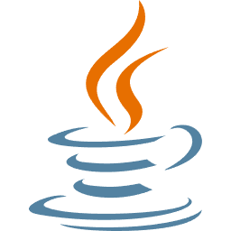
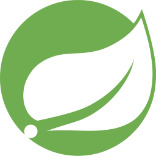
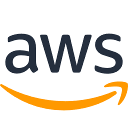

🕹️기술 스택
- 
- 
- 

사용자 취향과 여행 기록을 분석하여 맞춤형 여행지를 추천하는 서비스입니다. Spring Boot 기반으로 추천 알고리즘을 구현했습니다.
다양한 분야의 전문가와 사용자를 연결하는 재능 공유 플랫폼입니다. 실시간 채팅과 안전한 결제 시스템을 구축하여 사용자 경험을 높였습니다.
안정적이고 확장 가능한 서비스 운영을 위해 AWS 인프라를 설계하고 구축했습니다. Jenkins를 이용한 CI/CD 파이프라인을 구성했습니다.